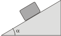
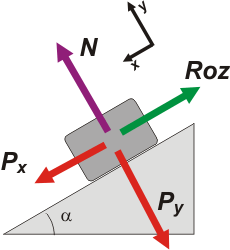

| |
NO ME SALEN
PROBLEMAS RESUELTOS DE FÍSICA DEL CBC
Rozamiento |
|
|

|
| |
dN2.33* - El cuerpo de la figura de masa m= 2 kg se encuentra apoyado e inmovilizado mediante una traba sobre un pano cuya inclinación es α = 20º. Si los coeficientes de rozamiento dinámico y estático son de 0,2 y 0,3 respectivamente, en el momento que se destrabe el cuerpo:
|
 |
a) Permanecerá en reposo
b) bajará a velocidad constante
c) Bajará aproximadamente a a = 0,6 m/s²
d) Bajará a aproximadamente a a = 1,54 m/s²
d) Bajará aproximadamente a a = 5 m/s²
e) Bajará aproximadamente a a = 10 m/s²
|
|
|
En este ejercicio hay que proceder con estrategia, con inteligencia. o primero que hay que saber es si al destrabar el cuerpo comenzará a descender. Ello ocurrirá solo si la fuerza que lo tira hacia abajo puede superar la fuerza de rozamiento estática máxima... Y después vemos. Arranquemos con el diagrama de cuerpo libre. |
|
|  |
La fuerza peso ya la descompuse en sus dos compnentes: una paralela al plano y otra normal al plano inclinado.
A esta altura del partido ya tendrás que saber que siendo α el ángulo con la horizontal, entonces:
Px = m g sen α = 6,84 N
Py = m g cos α = 18,79 N
Si no sabés de dónde sale eso, tenés decenas de ejercicios anteriores que te lo explican. |
|
|
Ahora calculemos la fuerza máxima que podría soportar el rozamiento (la fuerza de rozamiento estática máxima).
RozeMAX = μe . N
RozeMAX = μe . Py
RozeMAX = 0,3 . 18,79 N = 5,64 N
Como ves esa fuerza es menor que la que tira para abajo ( 6,84 N) de modo que al destrabarse el cuerpo comenzará a deslizar... ¿pero con qué aceleración? A partir de ese momento la fuerza que retiene al cuerpo es el rozamiento dinámico:
Rozd = 0,2 . 18,79 N = 3,76 N
Luego, la aceleración valdrá:
Px — Rozd = m a
Despejo a y calculo:
a = ( 6,84 N — 3,76 N) / m
a = (Px — Rozd ) / 2 kg
|
|
| |
a = 1,54 m/s² |
respuesta d) |
|
|
Vos podías. |
|
| |
|
*Este ejercicio formó parte del final de Física tomado el 28 de julio de 2017.
Para ver el examen completo haga click acá. |
|
|
|
|
| |
DESAFIO: ¿? |
|
 |
| Algunos derechos reservados.
Se permite su reproducción citando la fuente. El Comité Internacional de Pedadogos Constructivistas ha resuelto prohibir la utilización de este material didáctico, desde ahora debes hacerlo en forma clandestina. Última actualización
ago-17. Buenos Aires, Argentina. |
|
|
|